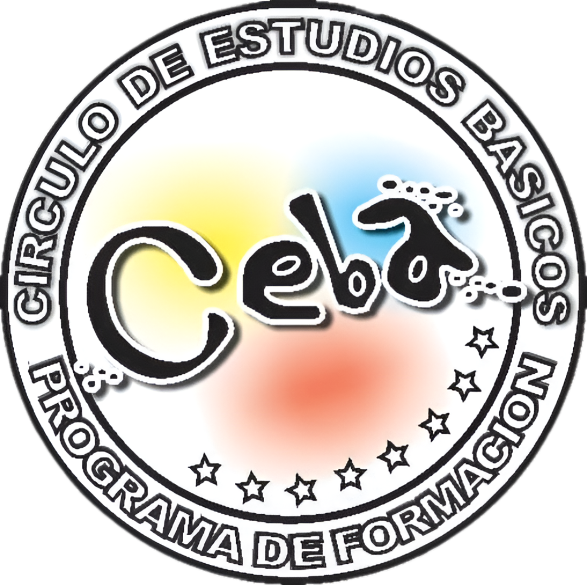

Curso de Inglés como Lengua Extranjera CEBA-UCV

El pensum del programa: Interchange Fitfh Edition consta de 4 libros con 16 unidades cada uno con títulos contentivos de situaciones personales y de la vida diaria, con chequeos continuos del progreso del estudiante cada dos unidades y diferentes tipos de ejercicios de expresión oral y escrita, y compresión lectora y auditiva con abundantes ilustraciones fotográficas que afianzarán el desarrollo de la destreza en el idioma Inglés. Además cuenta con secciones de Auto-Evaluación que le permiten al estudiante sentirse más seguro en su aprendizaje.
Veamos el contenido de cada libro
Nivel 1: Student's Book (Libro Amarillo)
Introductorio I: Unidades 1 – 8
Modalidad: Presencial y en línea.
Unidad 1: Págs. 2–7 — El alfabeto; saludos y despedidas; números 0 al 10; números telefónicos y direcciones de correos electrónicos.
Unidad 2: Págs. 8–13 — Pertenencias; objetos del salón de clase; artículos personales y ubicaciones en una habitación.
Unidad 3: Págs. 16–21 — Ciudades y países; adjetivos de personalidad y apariencia; números 11 al 103 y edades.
Unidad 4: Págs. 22–27 — Vestimenta, colores; clima y estaciones.
Unidad 5: Págs. 30–35 — Hora del reloj; hora del día; actividades diarias.
Unidad 6: Págs. 36–41 — Transporte; relaciones familiares; rutinas diarias; días de la semana.
Unidad 7: Págs. 44–49 — Casas y apartamentos; habitaciones; muebles.
Unidad 8: Págs. 50–55 — Empleos y lugares de trabajo.
Nivel 2: Student's Book (Libro Amarillo)
Introductorio II: Unidades 9 – 16
Modalidad: Presencial y en línea.
Unidad 9: Págs. 58–63 — Alimentos básicos; alimentos para el desayuno; comidas del día.
Unidad 10: Págs. 64–69 — Deportes; habilidades y talentos.
Unidad 11: Págs. 72–77 — Meses y fechas; cumpleaños; feriados; celebraciones y días especiales.
Unidad 12: Págs. 78–83 — Partes del cuerpo; problemas de salud y asesoramiento; medicamentos.
Unidad 13: Págs. 86–91 — Tiendas y artículos; atracciones turísticas.
Unidad 14: Págs. 92–97 — Fines de semana; quehaceres y actividades divertidas; vacaciones; actividades de verano.
Unidad 15: Págs. 100–105 — Información biográfica; años; días escolares.
Unidad 16: Págs. 106–111 — Locaciones; llamadas telefónicas; invitaciones; salidas con amigos.
Nivel 3: Student’s Book (Libro Rojo)
Básico I: Unidades 1 – 8
Modalidad: Presencial y en línea.
Unidad 1: Págs. 2–7 — Presentaciones y saludos; nombres; países y nacionalidades.
Unidad 2: Págs. 8–13 — Empleos, lugares de trabajo y entrenamiento; actividades diarias; la hora.
Unidad 3: Págs. 16–21 — Compras y precios; vestimenta y artículos personales; colores y materiales.
Unidad 4: Págs. 22–27 — Música, películas y programas de televisión; animadores; invitaciones y excusas; fechas y horas.
Unidad 5: Págs. 30–35 — Miembros de familia; familias típicas.
Unidad 6: Págs. 36–41 — Deportes; actividades físicas y ejercicios; rutinas.
Unidad 7: Págs. 44–49 — Tiempo de ocio y actividades de fin de semana.
Unidad 8: Págs. 50–55 — Tiendas y lugares en una ciudad; vecindades; casas y apartamentos.
Nivel 4: Student’s Book (Libro Rojo)
Básico I: Unidades 9 – 16
Modalidad: Presencial y en línea.
Unidad 9: Págs. 58–63 — Apariencia y vestimenta; ropa y estilos de vestir; personas.
Unidad 10: Págs. 64–69 — Actividades pasadas; actividades inusuales.
Unidad 11: Págs. 72–77 — Ciudades; lugares de origen; países.
Unidad 12: Págs. 78–83 — Problemas de salud; tratamientos y remedios; productos en una farmacia.
Unidad 13: Págs. 86–91 — Alimentos y restaurantes.
Unidad 14: Págs. 92–97 — Geografía mundial y documentación; países.
Unidad 15: Págs. 100–105 — Invitaciones y excusas; actividades de ocio; mensajes telefónicos.
Unidad 16: Págs. 106–111 — Cambios de vida; planes y esperanzas para el futuro.
Nivel 5: Student’s Book (Libro Azul)
Intermedio I: Unidades 1 – 8
Modalidad: Presencial y en línea.
Unidad 1: Págs. 2–7 — Gente; niñez; recuerdos.
Unidad 2: Págs. 8–13 — Transporte; problemas de transportación; servicios municipales.
Unidad 3: Págs. 16–21 — Casas y apartamentos; cambios en el estilo de vida; deseos.
Unidad 4: Págs. 22–27 — Comida; recetas; instrucciones para cocinar; métodos de cocina.
Unidad 5: Págs. 30–35 — Viajar; vacaciones; planes.
Unidad 6: Págs. 36–41 — Quejas; quehaceres del hogar; solicitudes; excusas; disculpas.
Unidad 7: Págs. 44–49 — Tecnología; instrucciones.
Unidad 8: Págs. 50–55 — Días festivos; festivales; tradiciones; celebraciones.
Nivel 6: Student’s Book (Libro Azul)
Intermedio II: Unidades 9 – 16
Modalidad: Presencial y en línea.
Unidad 9: Págs. 58–63 — La vida en tiempos pasados, presente y futuro; cambios y contrastes; consecuencias.
Unidad 10: Págs. 64–69 — Habilidades y destrezas; preferencias laborales; rasgos de personalidad; carreras profesionales.
Unidad 11: Págs. 72–77 — Lugares emblemáticos y monumentos; conocimiento del mundo.
Unidad 12: Págs. 78–83 — Narración de historias; eventos inesperados del pasado reciente.
Unidad 13: Págs. 86–91 — Entretenimiento; películas y libros; reacciones y opiniones.
Unidad 14: Págs. 92–97 — Comunicación sin palabras; gestos y sus significados; señales; sacando conclusiones.
Unidad 15: Págs. 100–105 — Dinero; esperanzas; situaciones difíciles; especulaciones.
Unidad 16: Págs. 106–111 — Solicitudes; excusas; invitaciones.
Nivel 7: Student’s Book (Libro Verde)
Avanzado I: Unidades 1 – 8
Modalidad: Presencial y en línea.
Unidad 1: Págs. 2–7 — Tipos de personalidad y cualidades; parentescos; gustos y repudios.
Unidad 2: Págs. 8–13 — Empleos; beneficios profesionales; destrezas laborales; empleos en verano.
Unidad 3: Págs. 16–21 — Favores; solicitudes formales e informales; mensajes.
Unidad 4: Págs. 22–27 — Medios de comunicación; noticias; eventos excepcionales.
Unidad 5: Págs. 30–35 — Comparaciones culturales y choque cultural; mudarse al extranjero; emociones; costumbres; turismo y viajes al extranjero.
Unidad 6: Págs. 36–41 — Quejas de consumidores; problemas diarios; problemas con la electrónica; reparaciones.
Unidad 7: Págs. 44–49 — Medio ambiente; retos globales; problemas actuales.
Unidad 8: Págs. 50–55 — Educación; opciones del estudiante; estrategias para el aprendizaje; habilidades para la vida.
Nivel 8: Student’s Book (Libro Verde)
Avanzado II: Unidades 9 – 16
Modalidad: Presencial y en línea.
Unidad 9: Págs. 58–63 — Servicios diarios; recomendaciones; superación personal.
Unidad 10: Págs. 64–69 — Eventos históricos y su gente; biografía; el futuro.
Unidad 11: Págs. 72–77 — Hitos y puntos de inflexión; conducta y personalidad; arrepentimientos.
Unidad 12: Págs. 78–83 — Cualidades para el éxito; negocios exitosos; publicidad.
Unidad 13: Págs. 86–91 — Molestias; eventos inexplicables; reacciones; situaciones complicadas y consejos.
Unidad 14: Págs. 92–97 — Cine; medios de comunicación y entretenimiento; profesiones; procesos.
Unidad 15: Págs. 100–105 — Recomendaciones; opiniones; problemas comunitarios; temas controversiales.
Unidad 16: Págs. 106–111 — Desafíos; logros; metas; frases inspiradoras.